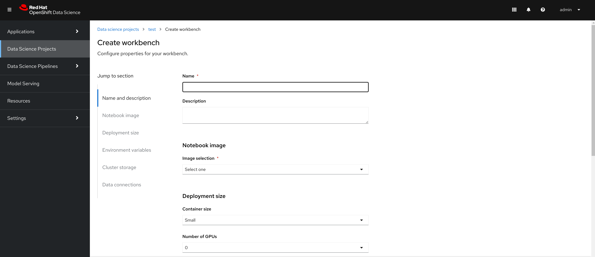

Installing Dependencies Using the Web Console
As described in the General Information about Installation section, you may need to install other operators depending on the components and features of OpenShift AI you want to use. This section will discuss about installing and configuring those components.
It is generally recommended to install any dependent operators prior to installing the Red Hat OpenShift AI operator.
- Red Hat OpenShift Serverless Operator
-
The Red Hat OpenShift Serverless Operator is required if you want to install the Single-model serving platform component.
- Red Hat OpenShift Service Mesh Operator
-
The Red Hat OpenShift Serverless Operator is required if you want to install the Single-model serving platform component.
- Red Hat OpenShift Authorino (technical preview) Operator
-
The Red Hat Authorino Operator is required to support enforcing authentication policies in Red Hat OpenShift AI.
- NVIDIA GPU Operator
-
The NVIDIA GPU Operator is required for GPU support in Red Hat OpenShift AI.
- Node Feature Discovery Operator
-
The Node Feature Discovery Operator is a prerequisite for the NVIDIA GPU Operator.
This section will discuss the process for installing the dependent operators using the OpenShift Web Console.
Installation of Red Hat OpenShift Serverless Dependencies
The following section discusses installing the Red Hat OpenShift Serverless operator.
Lab: Installation of the Red Hat OpenShift Serverless operator
-
Login to Red Hat OpenShift using a user which has the cluster-admin role assigned.
-
Navigate to Operators → OperatorHub and search for Red Hat OpenShift Serverless
-
Click on the Red Hat OpenShift Serverless operator. In the pop up window, select the stable channel and the most recent version of the serverless operator. Click on Install to open the operator’s installation view.
-
In the
Install Operatorpage, select the default values for all the fields and click Install.
-
A window showing the installation progress will pop up.
-
When the installation finishes the operator is ready to be used by Red Hat OpenShift AI.

Red Hat OpenShift Serverless is now successfully installed.
Installation of Red Hat OpenShift Service Mesh Dependencies
The following section discusses installing the Red Hat OpenShift Service Mesh operator.
Lab: Installation of the Red Hat OpenShift Service Mesh operator
-
Login to Red Hat OpenShift using a user which has the cluster-admin role assigned.
-
Navigate to Operators → OperatorHub and search for Red Hat OpenShift Service Mesh

-
Click on the Red Hat OpenShift Service Mesh operator. In the pop up window, select the stable channel and the most recent version of the server mesh operator. Click on Install to open the operator’s installation view.

-
In the
Install Operatorpage, select the default values for all the fields and click Install.
-
A window showing the installation progress will pop up.

-
When the installation finishes the operator is ready to be used by Red Hat OpenShift AI.

Red Hat OpenShift Service Mesh is now successfully installed.
Installation of Red Hat Authorino Dependencies
Lab: Installation of the Red Hat Authorino operator
-
Login to Red Hat OpenShift using a user which has the cluster-admin role assigned.
-
Navigate to Operators → OperatorHub and search for *Red Hat Authorino

-
Click on the Red Hat Authorino * operator. In the pop up window, select the *stable channel and the most recent version of the serverless operator. Click on Install to open the operator’s installation view.
-
In the
Install Operatorpage, select the default values for all the fields and click Install. -
A window showing the installation progress will pop up.
-
When the installation finishes the operator is ready to be used by Red Hat OpenShift AI.

Red Hat Authorino is now successfully installed.
The following section discusses installing the Red Hat - Authorino operator.
Lab: Installation of GPU Dependencies
Red Hat OpenShift AI makes it easy to expose GPUs to end users to help accelerate training and serving machine learning models.
Currently, Red Hat OpenShift AI supports accelerated compute with NVIDIA GPUs using the NVIDIA GPU Operator which relies on the Node Feature Discovery operator as a dependency.
The following section will discuss the installation and a basic configuration of both NVIDIA GPU Operator and the Node Feature Discovery operator.
| Node Feature Discovery and the NVIDIA GPU Operator can both be installed in a cluster that does not have a node with a GPU. This can be helpful when you plan to add GPUs at a later date. If a GPU is not present in the cluster, the Dashboard will not present the user an option to deploy using a GPU. |
| To view the list of GPU models supported by the NVIDIA GPU Operator refer to the Supported NVIDIA GPUs and Systems docs. |
Demo: Installation of the Node Feature Discovery operator
-
Login to Red Hat OpenShift using a user which has the cluster-admin role assigned.
-
Navigate to Operators → OperatorHub and search for Node Feature Discovery
-
Two options for the Node Feature Discovery operator will be available. Click on the one with Red Hat in the top right hand corner, and in the pop up window click on Install to open the operator’s installation view.
Make sure you select Node Feature Discovery from Red Hat NOT the Community version. -
In the
Install Operatorpage, select the option to Enable Operator recommended cluster monitoring on this Namespace, and keep all the rest of the parameters at their default values.Some of these options may vary slightly depending on your version of OpenShift. Please refer to the official Node Feature Discovery Documentation for your version of OpenShift for the recommended settings. -
Click the Install button at the bottom of the page to proceed with the installation. A window showing the installation progress will pop up.
-
When the installation finishes, click View Operator to configure the
Node Feature Discoveryoperator. -
Click the Create instance button for the NodeFeatureDiscovery object.
-
In the
Create NodeFeatureDiscoverypage, leave all fields at their default values, and click the Create button. -
A new set of pods should appear in the Workloads → Pods section managed by the nfd-worker DaemonSet. Node Feature Discovery will now be able to automatically detect information about the nodes in the cluster and apply labels to those nodes.
| For assistance in installing the Node Feature Discovery Operator from YAML or via ArgoCD, refer to examples found in the redhat-cop/gitops-catalog/nfd GitHub repo. |
Node Feature Discovery is now successfully installed and configured.
Lab: Installation of the NVIDIA GPU Operator
-
Login to Red Hat OpenShift using a user which has the cluster-admin role assigned.
-
Navigate to Operators → OperatorHub and search for NVIDIA GPU Operator
-
Click the
NVIDIA GPU Operatortile. In the pop up window leave all fields at their default values, and click on Install to open the operator’s installation view. -
In the
Install Operatorpage, keep all the parameters at their default values, and click the Install button at the bottom of the page to proceed with the installation.
-
A window showing the installation progress will pop up. Wait while the operator finishes installing.
-
When the installation finishes, click the View Operator button.
-
Click the Create instance button for the ClusterPolicy object.
-
In the
Create ClusterPolicypage, leave all fields at their default values, and click the Create button. -
After the ClusterPolicy is created, the NVIDIA GPU Operator will update the status State: ready.
-
After the Red Hat OpenShift AI operator has been installed and configured, users will be able to see an option for "Number of GPUs" when creating a new workbench.

| The Dashboard may initially show "All GPUs are currently in use, try again later." when Red Hat OpenShift AI is first installed. It may take a few minutes after Red Hat OpenShift AI is installed before the GPUs are initially detected. |
| The NVIDIA GPU Operator supports many advanced use cases such as Multi-Instance GPU (MIG) and Time Slicing that are configurable using the ClusterPolicy. For information about advanced GPU configuration capabilities, refer to the official NVIDIA Documentation. |
| For assistance installing the NVIDIA GPU Operator from YAML or via ArgoCD, refer to examples found in the redhat-cop/gitops-catalog/gpu-operator-certified GitHub repo. |